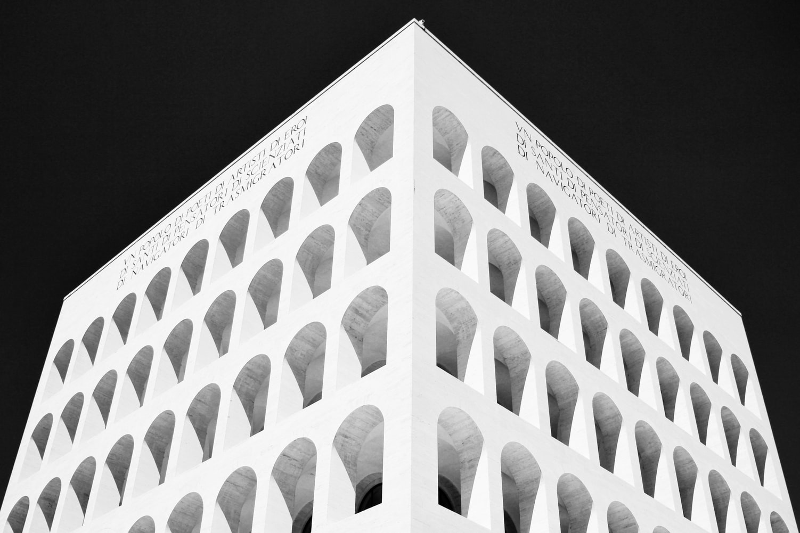

My Profile
About Me
Perkenalkan nama saya Muhammad Syukur Abadi, biasa saya dipanggil syukur . Saya tinggal di Batam, dan saat ini berkuliah di UM jurusan Teknik Elektro, program studi Teknik Informatika, angkatan 2019
Di Malang, saya tinggal di Lowokwaru
Education
- SDN 005 Batam Kota
- SMPN 10 Batam
- SMAN 3 Batam
- Universitas Negeri Malang